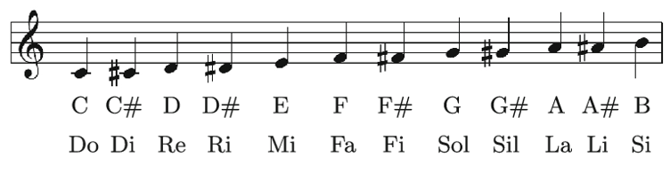
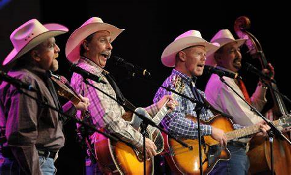
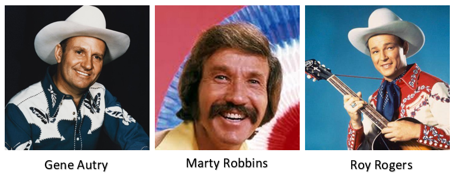

Western music
Western music is a form of country music composed by and about the people who settled and worked throughout the Western United States and Western Canada. Western music celebrates the lifestyle of the cowboy on the open ranges, Rocky Mountains, and prairies of Western North America.
History
Western music was directly influenced by the folk music traditions of England, Wales, Scotland, and Ireland, and many cowboy songs, sung around campfires in the 19th century, such as "Streets of Laredo", can be traced back to European folk songs. It is a common impression that western music began with the cowboy, but this is not the case. The first "western" song was published in 1844. Titled "Blue Juniata", the song is about a young Indian maid waiting for her brave along the banks of the Juniata River in Pennsylvania. In 1908, N. Howard "Jack" Thorp published the first book of western music, titled Songs of the Cowboys. Containing only lyrics and no musical notation, the book was very popular west of the Mississippi River. In 1910, John Lomax, in his book Cowboy Songs and Other Frontier Ballads, first gained national attention for western music. Throughout the 1930s and 1940s, western music became widely popular through the romanticization of the cowboy and idealized depictions of the west in Hollywood films. The Western Writers of America was formed in 1953 to promote excellence in western-style writing, including song writing. In 1964, the Country & Western Music Academy was formed in an effort to promote western music, primarily in the Western United States.
Popular western musicians
List of western music songs
"Abilene"
"Along the Navaho Trail"
"Along the Santa Fe Trail"
"Back in the Saddle Again"
"Ballad of the Alamo"
"Bonanza"
"Buenas Tardes Amigo"
"Big Iron"
"Billy the Kid"
"Blue Shadows on the Trail"
"Blue Prairie"
"Buffalo Gals (Won't You Come Out Tonight?)"
"Bury Me Not on the Lone Prairie"
"Call of the Canyon"
"Carry Me Back to the Lone Prairie"
"The Cattle Call"
"Cheyenne"
"Cimarron (Roll On)"
"Cocaine Blues"
"Cool Water"